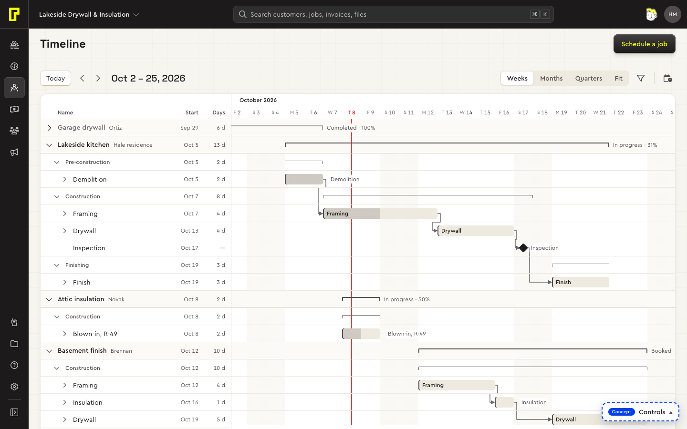
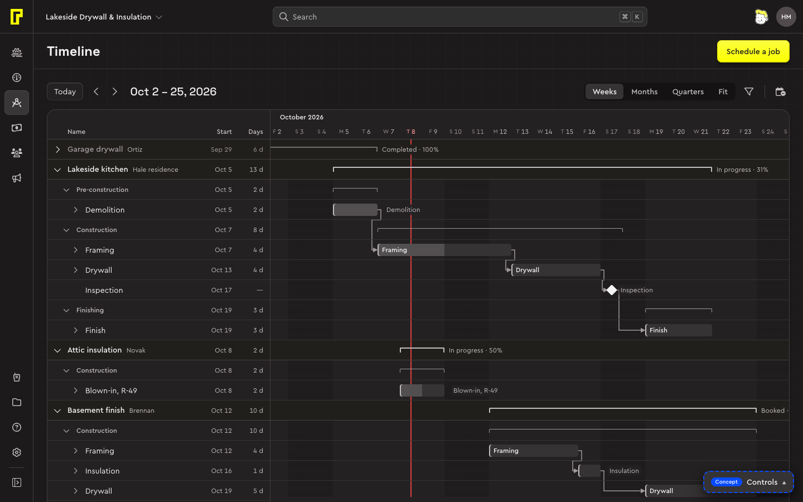
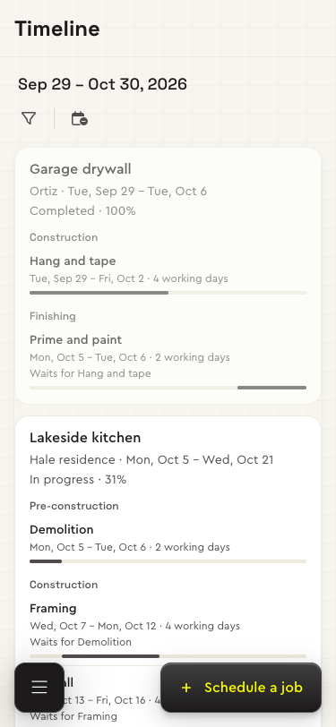
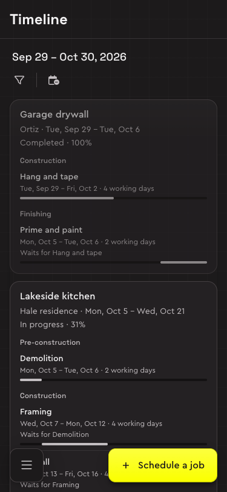

Bolster's Timeline (Jobs → Timeline) is its schedule as a gantt. The system's timeline shows every job's plan on one line of days: a job's phases and stages, a stage's labour and materials folded under it, which stage waits for which, and where today falls. It reads the same jobs and dates as the calendar.




Try it: the timeline concept, with made-up data.
Who it's for
Whoever plans the work: when each job's stages run, what holds up what, and what happens to the rest of the plan when one stage slips. Days off are weekends here, until the company's settings say otherwise.
Parts
| Part | What it holds | Built from |
|---|---|---|
| Toolbar | Where you are (Today, the arrows, the period in words), the scale (Weeks, Months, Quarters, Fit), the filter button, and Unscheduled. What's set or hidden is a chip on the row below, with the count and Clear all (D127). | Toolbar, Segmented control, Chip |
| The grid | Name, start and working days on the left, rows lined up with the chart. Each job is a group, its row the list's group row, sticking under the scale while you're in its rows. | Draft, with Data table group rows |
| The chart | A job or phase as a bracket over its stages; a stage as a bar, its done part darker; a milestone (an inspection) as a diamond; items as thin bars. Weekends shaded, today a line in the alert colour. | Drafts |
| Links | Finish to start: an elbow line with an arrow from one stage's end to the next's start, red and dashed when it starts too early. | Draft |
| Summary | A stage's dates, working days, crew, links and Move; a job's span, status, client and Open job. | Popover |
No job has a colour of its own (trying out, D100): every bar is the same quiet tint, and the job's name says which job. Patterns: Page scrolling, Drag and drop, Filtering.
Behaviour
Stages move in place: a click opens a summary, a drag moves, stretches or links, and every change says so in a toast with Undo (I21).
| What | How |
|---|---|
| Reading | A job's or phase's chevron folds it; a stage's opens its labour and materials. A bracket, pointed at, outlines its rows with a dashed line. Every fact on a bar is in its row, so the grid is what a screen reader reads. |
| Scrolling | Down, the page scrolls, the scale and each job's row sticking under the top bar and sliding up with it. Along the days the chart moves itself: a trackpad's swipe, a tilted wheel or Shift and the wheel, a finger on a tablet, or its scrollbar pinned to the window's foot (D127, D128). The grid stays at the left. |
| Moving along | Today puts today a quarter of the way in; the arrows move by most of a screen. Changing the scale keeps the day in the middle where it is. The scale is remembered in the browser. |
| Opening | A click, Enter or Space on a stage's name or bar opens its summary at the bar; a job's name opens the job's. Close, Escape or a click outside return focus. |
| Moving | With a mouse or pen: drag a bar to move it, its end to stretch it, a bracket to move all of it, a day at a time. A dark tag shows the dates and working days. Moved later, what waits on it moves by as much, keeping its gap, and the toast names it. Escape cancels. |
| Linking | Drag from the small circle at a bar's end onto another stage of the same job: that stage now waits for it. Another job's stage, or a circle, is refused with a toast. The summary's Waits for has × to remove one. |
| By keyboard and on phones | The summary's Starts, then Move: the same as a drag, toast and Undo. |
| Narrowing | The filter button's menu: Show (finished jobs, links between stages), then Filter by: Jobs (found by job or client), Owner, Assigned to, Done by (our crew or subcontractors) and Status. A stage's filters keep its job and phase around it. Kept in the browser (D99). |
| Scheduling | Unscheduled lists the jobs with no dates: open one, pick Start on, Schedule. |
| Phones | A list: each job a card with its phases and stages, dates, what each waits for and a track of where it falls. A tap opens the summary as a sheet; no dragging. |
Principles
- Two parts, scrolled by the page. The grid of the work beside its bars, down the page as every page scrolls.
- Job, phase, stage; items folded. A job's and a phase's dates and progress come from their stages, drawn as a bracket, never typed, so a stage can't sit outside its job.
- Lengths in working days, weeks from Monday.
- Moving is dragging; the drop saves, with Undo. Later work keeps its gap; moved earlier, nothing else moves.
- Narrowed by job first, then by who and by status, said with a count and one way out.
- Nothing hidden by default. Finished jobs stay, muted, left of today; jobs with no dates wait under Unscheduled.
Drafts
New parts this page carries, waiting for the product designer's approval before they move into the system.
| Draft | What it is | Decisions |
|---|---|---|
| Gantt grid and chart | Name, start and working days beside the bars, each job a group; the scale sticking on top, the days sliding under the grid by their own scrollbar. | D97, D127, I21 |
| Brackets, bars and milestones | A job or phase as a bracket, a stage as a bar with its done part darker, a milestone as a diamond, items as thin bars. | D97, I21 |
| Timeline filters | All under the filter button: Show, then Jobs, Owner, Assigned to, Done by and Status, each set one a chip with the count. | D99, D127, I21 |
| Links | Finish to start, elbow lines with an arrow, red and dashed when broken; drawn from a bar's end onto another. | D97, I21 |
Open questions
- Calendar and Timeline as two pages (assumed, as Bolster has them), or two views of one schedule page?
- A stage waits for one other here; Bolster may allow several.
- Moving an item on its own: items follow their stage here.
- Days off from the company's settings; weekends here.
What's still open
- The About dialog still says Jobs sits in the toolbar, and its CSS header mentions job colours; D127 and D100 changed both.
Decisions and contracts
- D97The timeline, built as a conceptTrying out
- D99The timeline's filters: Jobs in the toolbar, the rest under Add filter (all under the filter button now, D127)Trying out
- D100No colour per jobTrying out
- D127The timeline scrolls with the page; everything that narrows it under one buttonTrying out
- D128The page is the one scrollerDecided
- I21Timeline